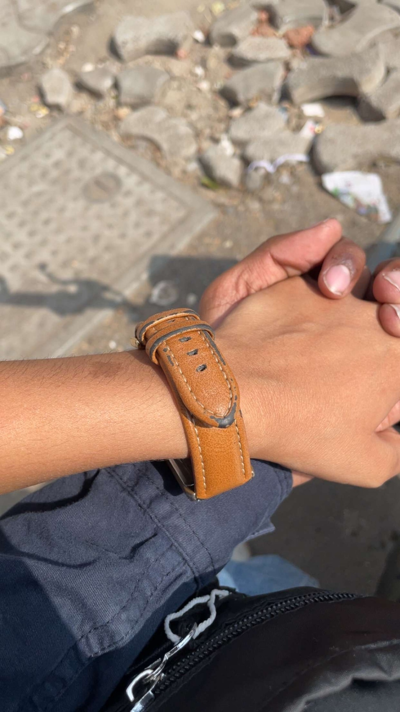
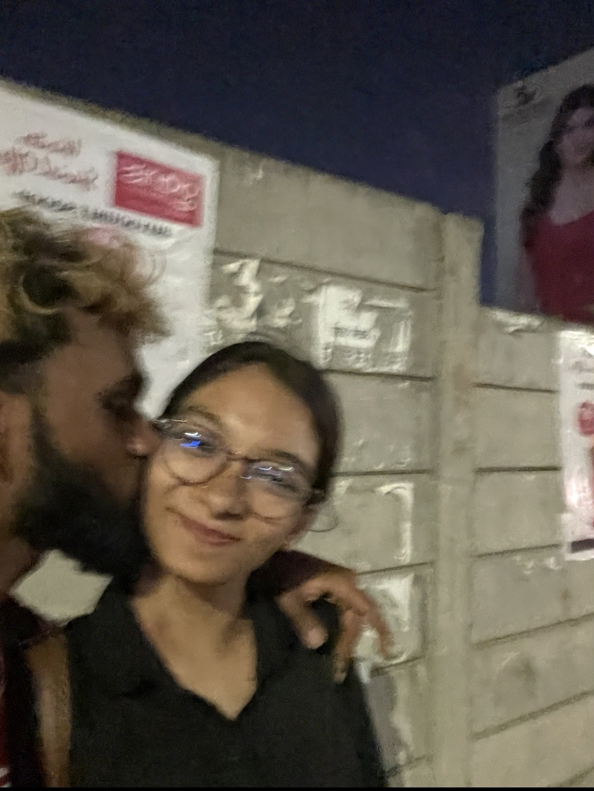

A little universe, just for you.

somewhere along the way
you became
my person.
And I don't think I ever properly told you how much that means to me.

and then there were all these little moments
We've already made
so many little memories.
But when I look at us...
I don't just think about what we've already lived.
past the edge of what we know
I think about everything
we haven't lived yet.
I don't know what life has planned for us.
I don't know where we'll be.
I don't know what we'll become.
But I know who I want beside me.
I can't promise that every day will be perfect.
I can't promise that we'll never fight.
I can't promise that life will always be easy.
But I can promise this...
I'll keep choosing you.
Through every version of us.
Through every stage of life.
So...
I have one question.
Will you walk through life
with me?
Will you be there for the lifetime of little moments with me?
then let's keep going
Then let's make the rest
of our story beautiful.
Chapter after chapter.
Day after day.
Together. ♥